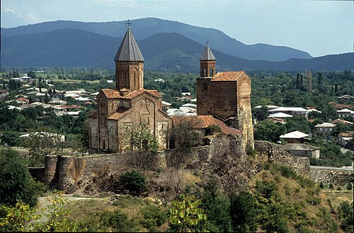

კახეთი — ისტორიულ-გეოგრაფიული რეგიონი აღმოსავლეთ საქართველოში.
კახეთი ერთ-ერთი დიდი რეგიონია საქართველოს ფარგლებში.
კახეთი ცნობილია კულტურულ ძეგლთა სიმრავლით.
არაერთი ეკლესია-მონასტერი თუ ციხესიმაგრე იპყრობს ტურისტებისა და ექსკურსანტების ყურადღებას.
კახეთის გამორჩეულად ცნობილი კულტურული ძეგლებია: ნინოწმინდა, ბოდბე, ხორნაბუჯი, უჯარმა, სიღნაღი, გურჯაანის ყველაწმინდა, ალავერდი, ახალი და ძველი შუამთა, იყალთო, გრემი, ნეკრესი.
თითოეული ეკლესია-მონასტერი ძველი ტრადიციის მატარებელია, დღემდე მოქმედებს მათი სახელობითი დღესასწაულები.
ეს კი საუკეთესო ფაქტორია მომლოცველთა ან უბრალოდ კულტურული ტურიზმით დაინტერესებულთათვის.
მხარეს დიდი პოტენციალი აქვს ღვინის ტურიზმის განვითარებისთვის. კახეთის მეღვინეობის ისტორია ჩვ. წ. აღ-მდე III–II საუკუნეში იწყება და დღემდე მხარის ეკონომიკის უმნიშვნელოვანეს დარგს წარმოადგენს.

გეოგრაფია
კახეთს დასავლეთიდან ესაზღვრება ქართლი, ხოლო ჩრდილოეთით კავკასიონის ქედი დაღესტნიდან ჰყოფს.
კახეთში წარმოდგენილია ჰავისა და ლანდშაფტის მრავალფეროვნება, აქ გვხვდება როგორც სუბტროპიკული, ისე სტეპური ბუნება.
საშუალო ტემპერატურა ზამთარში +1.4 °C, ხოლო ზაფხულში +23–25 °C-ია.
კახეთის ბუნება მეტად მრავალფეროვანია, რეგიონის მასშტაბით გვხვდება ნახევრადუდაბნოები, მარადმწვანე ტყეები და სუბალპური მცენარეული საფარიც კი.
ყველაზე დაბალი ადგილი ელდარის ვაკეა (90–150 მ. ზღ. დ.), ხოლო უმაღლესი — თებულოსმთა (4493 მ.).